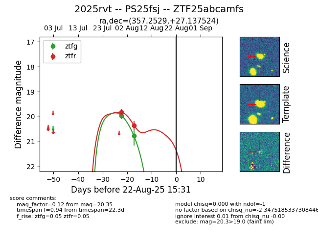

Target 2025rvt at 2025-08-22 18:16, see:
FINK: fink-portal.org/ZTF25abcamfs
Lasair: lasair-ztf.lsst.ac.uk/objects/ZTF25abcamfs
ALeRCE: alerce.online/object/ZTF25abcamfs
TNS: wis-tns.org/object/2025rvt
YSE: ziggy.ucolick.org/yse/transient_detail/2025rvt
alt names
ZTF25abcamfs (ztf,alerce)
2025rvt (tns,yse)
PS25fsj (panstarrs)
coordinates:
equatorial (ra, dec) = (357.2529,+27.13752)
galactic (l, b) = (106.2075,-33.69874)
photometry
last ztfg=20.77, ztfr=20.35
2 ztfg, 2 ztfr detections
